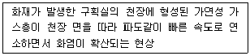
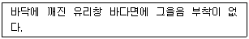
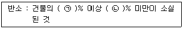
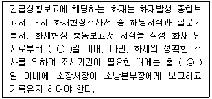
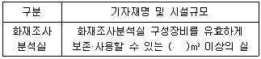
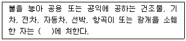
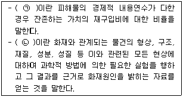
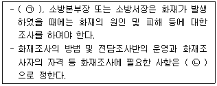
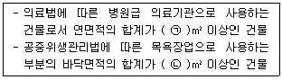
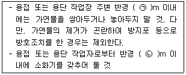

화재감식평가기사 (2018-09-15 기출문제)
1과목: 화재조사론
1. 철의 열적 변형에 대한 설명으로 틀린 것은? (문제 오류로 실제 시험에서는 1,3번이 정답처리 되었습니다. 여기서는 1번을 누르면 정답 처리 됩니다.)
- 녹는점은 600℃이다.
- 적열상태가 되면 연성이 증가한다.
- 수열이 있는 방향으로 휜다.
- 산화반응이 일어나 변색된다.
(정답률: 84%)

2. 샤프트공간의 개구가 상하로 동일 분포일 때 중성대의 높이는 몇 m 인가? (단, 샤프트공간의 높이는 H=100m, 온도는 30℃(303K)이고, 외기의 온도는 0℃(273K)로 한다.)
- 46.1
- 47.1
- 48.1
- 49.1
(정답률: 46%)
3. 다음은 어떤 화재 현상에 대한 설명인가?

- 롤오버
- 플래시오버
- 백드래프트
- 프로스오버
(정답률: 77%)
4. 화재 플럼(Fire Plume)에 의해 수직벽면에 생성되는 패턴이 아닌 것은?
- 도넛형태 패턴
- V 패턴
- 모래시계 패턴
- U 패턴
(정답률: 80%)
5. 폭발의 종류 중 화학적 폭발이 아닌 것은?
- 산화 폭발
- 비등액체증기 폭발
- 분해 폭발
- 중합 폭발
(정답률: 81%)
6. 목재의 타는 속도(연소속도)에 영향을 미치는 인자가 아닌 것은?
- 목재의 수령
- 목재의 밀도
- 목재의 종류
- 표면적 대 질량의 비율
(정답률: 77%)
7. 철재 구조물 용접 시 발생한 화재현장의 용접불티를 발견 및 수집하기 위한 장비로 옳은 것은?
- 빗자루
- 삽
- 집게
- 자석
(정답률: 71%)
8. 폭발 위력의 지표로 사용될 수 있는 자료가 아닌 것은?
- 파편의 비행거리
- 무너진 벽의 종류와 구조
- 폭심부의 깊이
- 폭발 시간
(정답률: 77%)
9. 화염확산에 대한 설명으로 틀린 것은?
- 일반적으로 중력과 바람은 화염확산에 영향을 미친다.
- 훈소는 확산화염에 의한 연소과정이다.
- 벽면에서 화염 확산속도는 수평방향보다 수직방향이 빠르다.
- 인화성액체의 표면화염 확산속도는 부력의 영향으로 고체의 확산속도보다 빠르다.
(정답률: 79%)
10. 220V, 2A가 전선에 1분간 전기가 인가되었을 때 저항에 발생하는 열량은 몇 cal인가?
- 1⑤.6
- 440
- 6336
- 26400
(정답률: 50%)
11. V 패턴의 각도에 영향을 미치지 않는 것은?
- 열방출률
- 가연물의 형태
- 환기의 효과
- 벽면의 열전도성
(정답률: 58%)
12. 물리적 작용에 의한 소화방법이 아닌 것은?
- 냉각소화
- 부촉매소화
- 제거소화
- 질식소화
(정답률: 86%)
13. 화염에 대한 설명으로 틀린 것은?
- 토치의 화염은 산소를 공급하면 짧아진다.
- 화염이 벽과 접하면 길어진다.
- 확산 화염의 색은 푸른색이다.
- 동일양의 가연물이 공급될 때 화염이 짧게 연소하면 온도가 높다.
(정답률: 57%)
14. 가연성 물질에 해당하는 것은?
- 아르곤
- 일산화탄소
- 산화알루미늄
- 헬륨
(정답률: 81%)
15. 구획실 화재의 연기에 대한 설명으로 틀린 것은?
- 연기의 물리적 상은 고체, 액체, 기체가 모두 포함되어 있다.
- 동일 가연물의 조건에서 환기-지배형 화재는 연료-지배형 화재보다 연기의 발생량이 많다.
- 성화기 이후 연기의 색상을 확인하여 가연물을 추정할 수 있다.
- 구획실 화재의 연기는 가연성이다.
(정답률: 53%)
16. 연소의 특성에 대한 설명으로 틀린 것은?
- 연소속도는 재료의 질량유속으로 정의되며, g/m2s으로 나타낸다.
- 일반적으로 표면에서의 질량유속은 5~50 g/m2s 범위에 있으며, 그 값이 5 이하인 것은 소화된다.
- 화염속도는 물적조건과 에너지조건인 농도, 압력, 온도보다 난류의 영향으로 가속된다.
- 연소속도는 화학양론비 부근에서 최소가 되고 연소상한계, 연소하한계로 갈수록 연소속도는 증가한다.
(정답률: 64%)
17. 가솔린의 연소범위(vol.%)가 1.4~7.6 일 때 위험도는?
- 0.8
- 1.2
- 4.4
- 6.4
(정답률: 74%)
18. 현장보존에 대한 설명으로 틀린 것은?
- 통제선을 설치하였다면 별도로 통제인원을 배치할 필요가 없다.
- 통제선을 출입하기 위해서는 일관된 입구와 통로를 활용한다.
- 통제선의 입구에는 출입자 명부를 비치활용하도록 한다.
- 통제선 내부로 진입하는 자는 완장 등 표찰을 패용하여 진입 권한이 있음을 표시해야 한다.
(정답률: 90%)
19. 다음 중 가연성고체에서만 나타나는 연소형태는?
- 분무연소
- 작열연소
- 확산연소
- 증발연소
(정답률: 71%)
20. 분진폭발의 위험이 가장 낮은 것은?
- 알루미늄 분말
- 강철 분말
- 티타늄 분말
- 생석회 분말
(정답률: 86%)
2과목: 화재감식론
21. 대기온도에 노출된 톱밥 입방체 크기(2r mm)에 따른 점화온도가 옳은 것은? (단, 오일 함유량은 0%라고 가정한다.)
- 25.4(2r mm), 460℃
- 51(2r mm), 374℃
- 152(2r mm), 152℃
- 303(2r mm), 47℃
(정답률: 52%)
22. 선박용 기곤의 연속최대출력에 대한 설명으로 옳은 것은?
- 주기관의 설계조건상 24시간 이상 연속 운전에서 낼 수 있는 안전 최대 출력
- 항해속력을 얻기 위하여 상용(商用)하는 출력
- 24시간 연속운전 중 2시간 동안 연속으로 운전 가능한 출력
- 항해속력을 확보하기 위해 해상여유(sea margin)를 포함한 출력
(정답률: 69%)
23. LPG탱크로리 가수누출 화재조사와 관련된 설명 중 틀린 것은?
- 로리호스는 기밀시험을 통해 누출여부를 확인하고 손상부위를 조사한다.
- 높이검지봉은 검지봉 높이를 줄자로 정확한 높이와 구부러짐을 확인한다.
- 리미트 스위치는 전선연결을 확인하고, 실제 동작여부를 엔진시동과 연관하여 조사한다.
- 커플링은 비파괴시험(초음파, 침투탐상)으로 현장에서 확인하고, 시험편으로 수거 정밀 조사한다.
(정답률: 62%)
24. 차량 화재조사 중 화재조사자의 안전 및 조사가 용이한 장소로 적합하지 않은 것은?
- 화재차량의 소유자가 신차(중고차)로 구입한 자동차판매영업소
- 화재차량의 소유가작 최근 차량검사 및 수리를 맡긴 자동차정비공장
- 화재가 발생한 고속도로의 갓길
- 소유자의 주차장 및 조사 가능한 주차장
(정답률: 83%)
25. 액화석유가스의 안전관리 및 사업법 상 사고 사실을 시장에게 보고하여야 하는 사고로 틀린 것은?
- 사람이 사망한 사고
- 사람이 중독되거나 부상당한 사고
- 20kg LPG 용기에서 가스가 누출된 사고
- LNG 시설이 손괴되어 공급중단이 발생한 사고
(정답률: 74%)
26. 가연물이 연소하기 위해서는 산소를 필요로 하는데 산소공급원이 아닌 것은?
- 탄화칼슘
- 과산화수소
- 과염소산나트륨
- 질산
(정답률: 68%)
27. 임야화재에 큰 영향을 미치는 주요 3요소가 아닌 것은?
- 점화원
- 지형
- 연료
- 기후
(정답률: 75%)
28. 전기설비의 사고 예방법으로 틀린 것은?
- 전기설비를 과부하 상태로 운전을 금함
- 물기가 생기지 않도록 설비의 방수
- 무자격자에 의한 전기설비의 보수를 금함
- 급격한 온도변화가 있는 곳에 전기설비의 설치
(정답률: 86%)
29. 전기화재에서 통전 입증방법으로 가장 적합한 것은?
- 전원 측에서 부하 측으로 입증
- 부하 측에서 전원 측으로 입증
- 전원 측과 부하 측을 동시에 입증
- 임의로 선정하여 입증
(정답률: 61%)
30. 연소의 수직 방향성의 상승속도는 수평 방향 속도보다 몇 배 정도인가?
- 10
- 20
- 30
- 40
(정답률: 64%)
31. 바람이 불 때 수관화의 연소형태로 옳은 것은?
- D형
- U형
- V형
- W형
(정답률: 56%)
32. 방화판정의 요건 중 방화를 의심할 수 있는 특징이 아닌 것은?
- 여러 곳에서 발화
- 연소촉진물질의 존재
- 연쇄적인 화재
- 실화요인 존재
(정답률: 83%)
33. 운손용 항공기에 고정된(fixed) 소화기장치(fire extinguishing system)를 갖추는 장소가 아닌 곳은?
- 조리실(galley)
- 보조동력장치실(APU compartment)
- 화물칸(cargo compartment)
- 화장실(lavatories)
(정답률: 49%)
34. LPG 차량의 구성 부품 중 LPG 봄베의 밸브 색상에 대한 설명으로 옳은 것은?
- 충전밸브 : 황색
- 액체 송출밸브 : 적색
- 기체 송출밸브 : 청색
- 충전, 액체 송출, 기체 송출밸브 : 청색
(정답률: 57%)
35. 액체가연물에 의한 화재패턴으로 틀린 것은?
- 포어 패턴(Pour pattern)
- 스플래시 패턴(Splash pattern)
- 틈새연소 패턴
- 크래이즈드 글라스(Crazed glass)
(정답률: 67%)
36. 무염화원의 한 종류인 담뱃불에 대한 최초 가연물로 틀린 것은?
- 종이
- 나일론
- 톱밥
- 면직류
(정답률: 70%)
37. 미국방화협회(NFPA)에서 분류되고 있는 K급 화재의 설명으로 옳은 것은?
- 수계소화방법이 권장된다.
- 일본에서는 D급 화재로 분류되어 있다.
- 주방에서 튀김 중 발생한 화재는 이에 포함된다.
- 국내의 경우 C급 화재로 분류되어 있다.
(정답률: 80%)
38. 위험물안전관리법령에 따른 혼합 적재가 가능한 위험물은?
- 제2류위험물 + 제3류위험물
- 제3류위험물 + 제5류위험물
- 제1류위험물 + 제2류위험물
- 제2류위험물 + 제5류위험물
(정답률: 69%)
39. 자연발화성 물질에 대한 특징으로 틀린 것은?
- 다른 어떠한 화원을 주지 않아도 물질이 상온의 공기 속에서 자기 스스로 열을 낸다.
- 산화열은 공기가 고온이면서, 습도가 낮은 경우에 발열과 축적효과가 크다.
- 자연발열을 일으키는 원인은 분해열, 산화열, 흡착열, 중합열, 발효열로 구분한다.
- 물질의 자연발열속도와 열이 달아나는 일주 속도와의 사이가 평행이 깨지며 열이 쌓여가기 때문에 발생한다.
(정답률: 68%)
40. 수분 또는 물과 접촉하면 수소가스를 발생하고 반응열에 의해 폭발하기 쉬운 물질은?
- 구리분말
- 석면
- 금속나트륨
- 철분말
(정답률: 81%)
3과목: 증거물관리 및 법과학
41. 액체 또는 고체 증거물의 수집 시 300mL 용량의 금속캔을 사용한다면 몇 mL 이상 채워져서는 아니 되는가?
- 50
- 100
- 150
- 200
(정답률: 70%)
42. 증거물의 수집에 대한 설명으로 틀린 것은?
- 원본대조를 할 수 없을 경우 제출자에게 원본과 같음을 확인한 후 서명 날인을 받아서 영치하여야 한다.
- 사본을 수집할 경우 원본과 대조한 다음 원본대조필을 하여야 한다.
- 물리적 증거물 수집은 증거물의 증거능력을 유지·보존할 수 있도록 행한다.
- 증거서류를 수집함에 있어서 사본 영치를 원칙으로 한다.
(정답률: 79%)
43. 촉진제를 확인하기 위한 테스트 방법으로 적합한 것은?
- GC(Gas Chromatography)
- SEM(Scanning Electron Microscope)
- GFT(Gas Flammable Test)
- TEM(Transmission Electron Microscope)
(정답률: 63%)
44. 현장사진 촬영의 필요성에 대한 설명 중 틀린 것은?
- 기록과 사진, 영상 모두 한계가 있으므로 문제가 해결될 때까지 현장을 보존하는 것이 가장 중요하다.
- 사진을 보는 사람이 실제적인 감각으로 느끼게 함으로서 그 때의 상황을 충분히 전달할 수 있는 것이 중요하다.
- 현장조사 시 실수록 빠트렸거나 수집이 불가능했던 많은 정보와 사실들을 사진을 통해 얻을 수 있다.
- 화재현장의 소손상황, 감식·감정의 대상이 되는 관계물건 등의 상황을 정확하게 기록하는 수단으로서 사진과 영상이 중요하다.
(정답률: 80%)
45. 표준렌즈에 대한 설명으로 옳은 것은?
- 과장이 거의 없다.
- 객관적 표현이 우수하고 일그러짐이 있다.
- 피사체가 작게 찍히고 피사계 심도가 깊다.
- 사람의 눈에 가장 가깝고 180도 이상 화각을 촬용할 수 있다.
(정답률: 70%)
46. 물적증거의 종류에 해당하는 것은?
- 관계자 진술
- 감정인 소견
- 유류 용기
- 증언
(정답률: 83%)
47. 증거물 관리에 대한 설명으로 옳은 것은?
- 어떠한 종류의 증거물이 발견되거나 조심스럽게 보존되었다면 완벽하게 관리되거나 문서로 기록되지 않더라도 증거로서 가치가 있다.
- 증거목록의 전달에 있어서 인수자의 서명과 전달일자와 시간만 기록되면 된다.
- 증거물의 파손을 최소화하기 위해서는 증거물을 취급하는 사람의 수를 최소화해야 한다.
- 여러 사람이 같은 범죄현장에서 증거를 찾고 있다면 각각 증거기록을 유지하는 것이 바람직하다.
(정답률: 69%)
48. 화재로 사망한 사람의 생활반응으로 틀린 것은?
- 종창
- 피하출혈
- 피분탄화
- 염증성 발적
(정답률: 41%)
49. 유류성분을 수집할 때 주변에 있는 바닥재나 플라스틱 등 비교샘플을 함께 수집하는 이유로 옳은 것은?
- 바닥재나 플라스틱 등 다른 가연물의 연소성을 입증하기 위함
- 유류가 기화하기 전에 많은 양의 유류를 수집하기 위함
- 유류와 혼합된 물체의 질량 변화를 입증하기 위함
- 유류 성분이 주변 가연물로부터 추출된 것이 아니라는 것을 입증하기 위함
(정답률: 66%)
50. 증거물의 역할에 따른 분류 중 다음 증거물의 역할로 옳은 것은?

- 접촉 증거
- 시간적 증거
- 방향적 증거
- 행위적 증거
(정답률: 65%)
51. 카메라에 내장된 노출계의 측광방식에 대한 설명 중 틀린 것은?
- 평균측광은 파인더의 화면 전체의 노출값을 다 참고해서 노출을 측정하는 방식이다.
- 중앙부 중점 측광은 화면의 중심부를 70%정도, 변두리 쪽은 30%정도 비주응로 측광하여 평균을 내는 방식으로 주 피사체를 중심부에 놓고 찍는 것을 전제로 하는 측광방식이다.
- 스팟측광은 화면의 일부만을 측광하는 방식으로 주 피사체의 정확한 노출을 측광할 수 있어 역광 촬영이나 콘트라스트가 강한 장면의 촬영 시에 사용된다.
- 다분할 측광은 화면을 여러 개로 분할하여 각각 측정하여 평균치를 내는 방식으로 너무 강한 빛이나 약한 빛이 측광되면 제외시켜 버리고 나머지 것으로 평균을 내는 방식이다.
(정답률: 49%)
52. 화상의 깊이에 다른 대표증상의 연결이 옳은 것은?
- 1도 화상 - 탄화
- 2도 화상 - 수포
- 3도 화상 – 홍반
- 4도 화상 – 괴사
(정답률: 83%)
53. 살아 있는 사람이 익사하거나 소사할 경우에 입에서 하얗고 빽빽한 점액성 거품이 부풀어 오르는 생활반응은?
- 창상개구
- 미세포말
- 발적 종창
- 화상포
(정답률: 69%)
54. 전신적 생활반응에 해당하는 것은?
- 압박성 울혈
- 흡인 및 연하
- 속발성 염증
- 피하출혈
(정답률: 49%)
55. 건강한 성인이 극심한 두통, 어지럼, 의식장애, 멀미, 구토 및 산소부족으로 인한 실신을 유발하는 혈중 일산화탄소 농도는?
- 10~20%
- 20~30%
- 30~40%
- 40~50%
(정답률: 46%)
56. 화재현장에서 사람의 생활반응으로 틀린 것은?
- 화상을 입었다.
- 시반이 형성되었다.
- 기도 내에서 매가 발견되었다.
- 두개골 외판에 탄화가 일어났다.
(정답률: 51%)
57. 카메라 셔텨속도가 렌즈구경의 관계에 대한 설명 중 옳은 것은?
- 같은 빛의 세기에서 셔터시간을 늘려주면 렌즈구경은 커져야 한다.
- 같은 빛의 세기에서 셔터시간을 줄여주면 렌즈구경은 커져야 한다.
- 같은 빛의 세기에서 렌즈구경을 크게 하면 셔터속도는 느리게 해 주어야 한다.
- 같은 빛의 세기에서 렌즈구경을 작게 하면 셔텨속도는 빠르게 해 주어야 한다.
(정답률: 54%)
58. 용융점이 높은 것에서 낮은 순서로 옳게 나열된 것은?
- 스테인리스 → 텅스텐 → 아연 → 마그네슘 → 동
- 텅스텐 → 스테인리스 → 동 → 마그네슘 → 아연
- 텅스텐 → 스테인리스 → 마그네슘 → 동 → 아연
- 스테인리스 → 텅스텐 → 동 → 아연 → 마그네슘
(정답률: 58%)
59. 화상사의 사망기전으로 틀린 것은?
- 원발성 쇼크
- 속발성 쇼크
- 합병증
- 기도 폐색
(정답률: 40%)
60. 유류 증거물의 인화점 시험방법으로서 주로 인화점이 93℃ 이하인 시료를 측정하는 데 사용되는 것은?
- 태그 밀폐식
- 펜스키마텐스 밀폐식
- 클리브랜드 개방식
- 원자흡광분석
(정답률: 68%)
4과목: 화재조사보고 및 피해평가
61. 화재현장 조사서 화재건물 현황의 기재사항이 아닌 것은?
- 건축물 현황
- 보험가입 현황
- 화재발생 후 상황
- 소방시설 및 위험물 현황
(정답률: 60%)
62. 화재 피해조사 및 피해액 산정순서로 옳은 것은?
- 화재현장 조사 → 피해정도 조사 → 기본현황 조사 → 재구입비 산정 → 피해액 산정
- 화재현장 조사 → 기본현황 조사 → 피해정도 조사 → 재구입비 산정 → 피해액 산정
- 기본현황 조사 → 피해정도 조사 → 화재현장 조사 → 재구입비 산정 → 피해액 산정
- 기본현황 조사 → 피해정도 조사 → 재구입비 산정 → 피해액 산정 → 화재현장 조사
(정답률: 68%)
63. 화재조사 및 보고규정에 따른 건축·구조물 화재의 소실정도 기준 중 다음 ( )안에 알맞은 것은?

- ㉠ 20, ㉡ 50
- ㉠ 20, ㉡ 70
- ㉠ 30, ㉡ 50
- ㉠ 30, ㉡ 70
(정답률: 77%)
64. 철근콘크리트조 슬래브지붕 4층 건물의 1층에서 화재가 발생하여 1층 점포 300m2(바닥면적 기준)가 전소되고, 2층 벽면 1면에 100m2의 그을음 피해가 발생한 경우 소실 면적은 몇 m2인가?
- 400
- 350
- 320
- 200
(정답률: 65%)
65. 소방서장이 화재조사의 진행상황을 소방본부장에게 보고하고 기록유지 하여야 하는 조사결과 보고 기준 중 다음 ( )안에 알맞은 것은?

- ㉠ 15, ㉡ 30
- ㉠ 30, ㉡ 50
- ㉠ 10, ㉡ 30
- ㉠ 20, ㉡ 50
(정답률: 56%)
66. 화재현장 조사서의 작성 시 유의사항 중 틀린 것은?
- 관계자의 진술을 기재하지 않는다.
- 발화지점 및 화재원인 판정은 객관적인 증거자료를 첨부할 수 있다.
- 감식·감정 결과통지서, 참고문헌 등 참고자료를 첨부할 수 있다.
- 예상되는 사항 및 관련 조치사항 등도 기록할 수 있다.
(정답률: 81%)
67. 항공기, 선박, 철도차량, 특수작업용차량, 시중매매가격이 확인되지 아니하는 자동차에 대한 피해액 산정기준 중 틀린 것은?
- 감정평가서가 있는 경우 감정평가서상의 현재가액에 손해율을 곱한 금액을 화재로 인한 피해액으로 한다.
- 감정평가서가 없는 경우 회계장부상의 현재가액에 손해율을 곱한 금액을 화재로 인한 피해액으로 한다.
- 감정평가서와 회계장부 모두 없는 경우에는 제조회사, 판매회사, 조합 또는 협회 등에 조회하여 구입가격 또는 시중거래가격을 확인하여 피해액을 산정한다.
- 수리가 가능한 경우에는 수리비를 피해액으로 한다.
(정답률: 60%)
68. 화재현장 조사서(임야화재, 기타화재, 피해액이 없는 화재 이외의 화재)의 화재원인 검토 항목이 아닌 것은?
- 방화 가능성
- 인적 부주의 등
- 기름누출
- 기계적 요인
(정답률: 58%)
69. 화재조사 및 보고규정에 따른 화재의 유형별 분류가 아닌 것은?
- 임야화재
- 자동차·철도차량 화재
- 선박·항공기 화재
- 전기·화학 화재
(정답률: 71%)
70. 예술품 및 귀중품의 화재피해액 산정기준 중 틀린 것은?
- 감가공제를 하지 아니한다.
- 복수 전문가의 감정을 받거나 감정서 등의 금액을 피해액으로 인정한다.
- 공인감정기관에서 인정하는 금액을 화재로 인한 피해액으로 산정한다.
- 예술품 및 귀중품에 대한 그 가치를 손상하지 아니하고 원상태의 복원이 가능한 경우에는 피해액을 인정하지 아니한다.
(정답률: 70%)
71. 화재현장 출동보고서 기재사항 중 현장도착시 관찰·확인사항으로 옳은 것은?
- 화재 각지시의 위치
- 이상한 소리, 특이한 냄새, 폭발 등 특이한 현상과 확인시의 위치
- 누설전류·가스누설 유무
- 진화작업 시 발화지점 부근의 물건이동, 도괴, 손괴상황 등
(정답률: 66%)
72. 화재조사 및 보고규정에 따른 민원인이 제출한 화재사후 조사의뢰서의 내용에 따라 사후 조사를 실시한 후 작성을 생략할 수 있는 서류는?
- 화재현황 조사서
- 화제피해 조사서
- 화재현장 조사서
- 화재현장 출동보고서
(정답률: 68%)
73. 특수한 경우의 피해액 산정 우선 적용사항 기준 중 틀린 것은?
- 중고구입기계장치 및 집기비품의 제작년도를 알 수 없는 경우 신품가액의 30~50%를 재구입비로 하여 피해액을 산정한다.
- 중고기계장치 및 중고집기비품의 시장거래가격이 신품가격보다 높을 경우 신품가액을 재구입비로 하여 피해액을 산정한다.
- 공구 및 기구, 집기비품, 가재도구를 일괄하여 피해액을 산정할 경우 재구입비의 50%를 피해액으로 한다.
- 재고자산의 상품 중 견본품, 전시품, 진열품에 대해서는 구입가의 30~50%를 피해액으로 한다.
(정답률: 52%)
74. 소방·방화시설 활용조사서 소화시설의 기재사항이 아닌 것은?
- 소화기구
- 옥외소화전
- 연결송수관설비
- 물분무등소화설비
(정답률: 56%)
75. 화재유형별 조사서(건축·구조물 화재)의 특정소방대상물의 분류항목이 아닌 것은?
- 지하구
- 초고층시설
- 근린생활시설
- 문화집회 및 운동시설
(정답률: 58%)
76. 재고자산의 화재피해액 산정 시 회계장부에 현재가액이 확인된 경우의 산정기준으로 옳은 것은?
- 회계장부상 현자가액×손해율
- 재고자산의 출고가액×손해율
- 재고자산의 회전율×손해율
- 연간매출액÷손해율
(정답률: 70%)
77. 화재발생종합보고서 작성 시 질문기록서의 작성을 생략할 수 있는 화재는?
- 건축·구조물 화재
- 임야 화재
- 자동차 화재
- 선박 화재
(정답률: 83%)
78. 영업시설의 화재로 인한 소손 정도에 따른 손해율이 40%인 경우는?
- 영업시설의 일부를 교체 또는 수리하거나 도장 내지 도배가 필요한 경우
- 손상정도가 다소 심하여 상당부분 교체 내지 수리가 필요한 경우
- 불에 타거나 변형되고 그을음과 수침 정도가 심한 경우
- 부분적인 소손 및 오염의 경우
(정답률: 47%)
79. 신축 후 20년 된 블록조 슬래브지붕의 주택에 화재가 발생하여 450m2가 소실된 경우의 화재피해액은? (단, 내용연수 50년, 신축단가 450천원, 손해율 70%이다.)
- 96390천원
- 85⑤0천원
- 56700천원
- 93200천원
(정답률: 45%)
80. 잔존물 제거비의 계산 방법으로 옳은 것은?
- 산정대상 피해액×10%
- 산정대상 피해액×20%
- 화재 재구입비×10%
- 화재 재구입비×20%
(정답률: 56%)
5과목: 화재조사관계법규
81. 화재로 인한 재해보상과 보험가입에 관한 법률에 따른 특수건물의 소유자가 특약부화재보험에 가입하지 아니한 경우 최대 몇 만원 이하의 벌금에 처하는가?
- 500
- 300
- 150
- 100
(정답률: 65%)
82. 불을 놓아 사람이 주거로 사용하거나 사람이 현존하는 건조물, 기차, 전차, 자동차, 선박, 항공기 또는 광갱을 소훼한 자에 대한 죄명은?
- 현주건조물 등에의 방화죄
- 현조건조물 등에의 방화죄
- 일반건조물 등에의 방화죄
- 공용건조물 등에의 방화죄
(정답률: 67%)
83. 소방기본법에 따른 화재조사를 하기 위하여 소방서장의 보고 또는 자료 제출 명령을 위반하여 보고 또는 자료 제출을 하지 아니한 관계인에 대한 벌칙 기준으로 옳은 것은?
- 20만원 이하의 과태료
- 200만원 이하의 과태료
- 300만원 이하의 벌금
- 5년 이하의 징역 또는 5000만원 이하의 벌금
(정답률: 72%)
84. 소방기본법령에 따른 소방본부(거점소방서 포함) 화재조사전담부서에 갖추어야 할 장비 및 시설 기준 중 다음 ( ) 안에 알맞은 것은?

- 20
- 30
- 40
- 50
(정답률: 70%)
85. 형법에 따른 공용건조물 등에의 방화 기준 중 다음 ( ) 안에 알맞은 것은?

- 무기 또는 3년 이상의 징역
- 2년 이상의 유기징역
- 5년 이하의 징역
- 1년 이상의 10년 이하의 징역
(정답률: 69%)
86. 화재조사 및 보고규정에 따른 건물의 화재 피해액 산정기준으로 옳은 것은?
- 표준단가(m2당) × 소실면적 × [1-0.9 × 경과년수/내용년수] × 손해율
- 표준단가(m2당) × 소실면적 × [1-0.8 × 경과년수/내용년수] × 손해율
- 신축단가(m2당) × 소실면적 × [1-0.9 × 경과년수/내용년수] × 손해율
- 신축단가(m2당) × 소실면적 × [1-0.8 × 경과년수/내용년수] × 손해율
(정답률: 48%)
87. 화재조사 및 보고규정에 따른 용어의 정리 중 다음 ( ) 안에 알맞은 것은?

- ㉠ 잔가율, ㉡ 감식
- ㉠ 잔가율, ㉡ 감정
- ㉠ 최종잔가율, ㉡ 감식
- ㉠ 최종잔가율, ㉡ 감정
(정답률: 54%)
88. 소방기본법에 따른 화재의 원인 및 피해조사 기준 중 다음 ( )안에 알맞은 것은?

- ㉠ 소방청장, ㉡ 행정안전부령
- ㉠ 시·도지사, ㉡ 행정안전부령
- ㉠ 소방청장, ㉡ 대통령령
- ㉠ 시·도지사, ㉡ 대통령령
(정답률: 69%)
89. 화재로 인한 재해보상과 보험가입에 관한 법령에 따른 특수건물의 기준 중 다음 ( ) 안에 알맞은 것은?

- ㉠ 1000, ㉡ 3000
- ㉠ 2000, ㉡ 2000
- ㉠ 2000, ㉡ 3000
- ㉠ 3000, ㉡ 2000
(정답률: 54%)
90. 화재로 인한 재해보상과 보험가입에 관한 법률에 따른 한국화재보험협회가 보험계약을 체결할 때 또는 보험계약을 갱신할 때마다 해당 특수건물의 화재예방 및 소화시설의 안전점검을 대통령령으로 정하는 바에 따라 일정 기간 하지 않을 수 있는 대상기준 중 틀린 것은?
- 산업안전보건법에 따라 공정안전보고서를 작성하는 건물로서 총리령으로 정하는 위험도가 낮은 특수건물
- 고압가스 안전관리법에 따라 안전성향상계획을 작성하는 건물로서 총리령으로 정하는 위험도가 낮은 특수건물
- 화재예방, 소방설치·유지 및 안전관리에 관한 법률에 따라 소방정밀점검을 받은 건물로서 총리령으로 정하는 위험도가 낮은 특수건물
- 안전점검 결과 총리령으로 정하는 화재위험도지수가 낮은 특수건물
(정답률: 51%)
91. 소방기본법령에 따른 용접 또는 용단 작업장에서 불꽃을 사용하는 용접·용단기구 사용에 있어서 지켜야 하는 사항 중 다음 ( ) 안에 알맞은 것은? (단, 산업안전보건법에 따른 안전조치의 적용을 받는 사업장의 경우는 제외한다.)

- ㉠ 10, ㉡ 5
- ㉠ 5, ㉡ 10
- ㉠ 7, ㉡ 5
- ㉠ 5, ㉡ 7
(정답률: 64%)
92. 형법에 따른 화재에 있어서 진화용의 시설 또는 물건을 은닉 또는 손괴하거나 기타 방법으로 진화를 방해한 자는 최대 몇 년 이하의 징역에 처하는가?
- 3
- 5
- 7
- 10
(정답률: 60%)
93. 소방기본법령에 따른 화재원인조사의 종류가 아닌 것은?
- 연소상황 조사
- 발화원인 조사
- 인명피해 조사
- 소방시설 등 조사
(정답률: 68%)
94. 화재로 인한 재해보상과 보험가입에 관한 법률에 따른 특약부화재보험의 보험금액 기준 중 틀린 것은?
- 화재보험 : 특수건물의 시가에 해당하는 금액
- 손해배상책임을 담보하는 보험에 해당하는 부분 중 사망의 경우 : 피해자 1명마다 1억원 이상으로서 대통령령으로 정하는 금액
- 손해배상책임을 담보하는 보험에 해당하는 부분 중 부상의 경우 : 피해자 1명마다 사망자에 대한 보험금액의 범위에서 대통령령으로 정하는 금액
- 화재보험 시가의 결정에 관힌 기준은 총리령으로 정함
(정답률: 59%)
95. 화재조사 및 보고규정에 따른 화재범위가 2 이상의 관할구역에 걸친 화재의 경우의 화재 건수의 결정기준으로 옳은 것은?
- 선착대개 소속된 소방서에서 1건의 화재로 한다.
- 2개 소방서에서 각각 1건의 화재로 한다.
- 발화 소방대상물의 소재지를 관할하는 소방서에서 1건의 화재로 한다.
- 화재피해범위가 가장 넓은 소방서에서 1건의 화재로 한다.
(정답률: 80%)
96. 화재에 대한 손해배상 책임이 없는 경우로 옳은 것은?
- 화재로 타인의 생명을 해한 자
- 고의로 인한 화재로 타인의 재산에 손해를 가한 자
- 과실로 인한 화재로 타인의 재산에 손해를 가한 자
- 화재로 재산에 손해를 가한 미성년자가 그 행위에 대한 책임을 변식할 능력이 없는 자
(정답률: 81%)
97. 화재조사 및 보고규정에 따른 조사본부장의 책임이 아닌 것은?
- 조사요원 등의 지휘감독과 화재조사 집행
- 현장보존, 정보관리 및 관계기간에서의 협조
- 조사기록 서류 등의 분석 및 관리
- 조사본부 운영 및 총괄에 관한 사항처리
(정답률: 71%)
98. 민법에 따른 불법행위 및 배상책임에 관한 기준 중 틀린 것은?
- 고의 또는 과실로 인한 위법행위로 타인에게 손해를 가한 자는 그 손해를 배상할 책임이 있다.
- 배상의무자는 그 손해가 고의 또는 중대한 과실에 의한 것이고, 그 배상으로 인하여 배상자의 생계에 중대한 영향을 미치게 될 경우에는 법원에 그 배상액의 경감을 청구할 수 있다.
- 불법행위로 인한 손해배상의 청구권은 피해자나 그 법정대리인이 그 손해 및 가해자를 안 날로부터 3년간 이를 행사하지 아니하면 시효로 인하여 소멸한다.
- 도급인은 수급인이 그 일에 관하여 제삼자에게 가한 손해를 배상할 책임이 없다. 그러나 도급 또는 지시에 관하여 도급인에게 중대한 과실이 있는 때에는 그러하지 아니하다.
(정답률: 52%)
99. 화재조사 및 보고규정에 따른 건물의 동수 산정 기준 중 틀린 것은?
- 주요구조부가 하나로 연결되어 있는 것은 1동으로 한다. 다만, 건널 복도 등으로 2이상의 동에 연결되어 있는 것은 그 부분을 절반으로 분리하여 각 동으로 본다.
- 건물의 외벽을 이용하여 실을 만들어 작업실 용도로 사용하고 있는 것은 주건물과 다른 동으로 본다.
- 구조에 관계없이 지붕 및 실이 하나로 연결되어 있는 것은 같은 동으로 본다.
- 목조 건물의 경우 격벽으로 방화구획이 되어 있는 경우 같은 동으로 한다.
(정답률: 70%)
100. 제조물책임법에 따른 손해배상의 청구권은 피해자 또는 그 법정대리인이 손해, 손해배상 책임을 지는 자를 모두 알게 된 날부터 몇 년간 행사하지 아니하면 시효의 완성으로 소멸하는가?
- 3
- 5
- 7
- 10
(정답률: 66%)